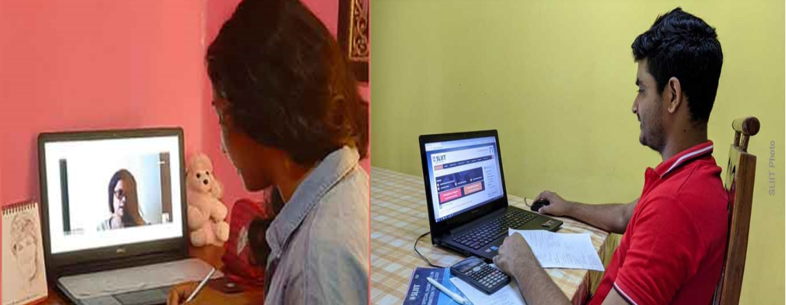

A Discussion on Industry Trends and Careers in HCI / UX
An awareness session for students and academics, on "Industry Trends and Careers in HCI/UX" was successfully held online, on Saturday 10th October 2020. More than 300 participants joined in this session showing their enthusiasm in HCI industry. Mr. Michael Lu, Lead UI/UX engineer at Sysco LABS conducted this session as the main speaker, showcasing Career Opportunities, Latest Trends in UX, and Industry Collaboration Opportunities in Human Computer Interaction and User Experience. This awareness session was organized by HCI teaching team of SLIIT as a guest lecture for undergraduates.
First ACM-SIGCHI Meetup at SLIIT
The First ACM-SIGCHI meet-up organised by SLIIT-HCI research group in collaboration with Colombo SIGCHI Chapter was successfully held on Wednesday, 23rd September 2020 at the Mini Auditorium. This was a panel discussion on "Positioning HCI for Computer Science". Dr. Kasun Karunarathne - Membership Chair (SIGCHI Col), Senior Lecturer (UCSC), Dr. Thilina Halloluwa - Treasurer (SIGCHI Col), Lecturer (UCSC), Dr. M. Wickremasinghe - Senior Lecturer (UCSC), Dr. Shyam Reyal - Senior Lecturer (SLIIT) contributed to the topic as panelists and the discussion was moderated by Ms. Dilrukshi Gamage - Chair (SIGCHI Col), Research Scholar UoM. The event was graced by Prof. Chandimal Jayawardana - Dean FOC, Prof. Rahula Attalage - Dean FGSR, Dr. Nuwan Kodagoda - HOD CSSE, Mr. Jayantha Amararachchi - HOD IT, and both senior and Junior academics interested in HCI.
Algothon Workshop
MS Club in SLIIT collaborating with FOCC community commenced a series of training sessions for SLIIT CODEFEST Algothon competition on 10th August 2020 at 7.00 p.m. online through MS TEAMS platform. The participants will get two workshops per week, and the 6th Workshop was successfully held on 21st September 2020. From these workshops, participants get opportunity to enhance the skills on Algorithms and problem-solving in order to practice for the competition. The training sessions are conducted by the Dr. Shyam Reyal who is a senior lecturer at SLIIT with 20 years of experience in algorithmic programming.
CODEFEST - Algothon
CODEFEST is a nationwide Software Competition organized by the Faculty of Computing of Sri Lanka Institute of Information Technology (SLIIT) in every year. This year SLIIT has introduced another new competition named as Algothon for people who interested in algorithms and problem solving. In this competition contestants need to solve a number of algorithmic programming problems within a fixed time period.
HCI meeting - 10th Anniversary
HCI group successfully had their 10th anniversary meeting on 12th August 2020 at 2.30p.m to 3.30p.m with 74 participants. HCI research group organized a research seminar in collaboration with the FOC-RC (Faculty of Computing Research Committee) for the 10th Anniversary. Dr. Neesha Kodagoda, who is a visiting research fellow at Middlesex University, UK and Senior Scientist for Product Innovation and Delivery Lead for Valcri at Genetec joined as the international guest speaker to share her knowledge about “VALCRI – a case study on globally applicable best practices in HCI research”.
CODEFEST -Designathon
CODEFEST is a nationwide Software Competition organized by the Faculty of Computing of Sri Lanka Institute of Information Technology (SLIIT) in every year. Designathon is the HCI based competition in Codefest. 2019 We had it as an overnight competition. This competition based on creativity and design abilities as a group. And this year we are going to add a new competition named Algothon. Algothon is an Algorithmic timed programming competition. So, those who interested can participate for Designathon and Algothon in this year. For sure you will get a great experience. Not only the experience if you win you will get cash prizes and certificates.
HCI Module delivery started
Making the transition with confidence, SLIIT had delivered lectures to students via the institution’s advanced online platform. So, the new semester has started. So, the HCI module also started with online delivering and as well as physical delivering. Online lecturing going on to 75% students and with the start of the physical lecturing at SLIIT 25% of students come to SLIIT to learn their module according to a proper time table. As online, we upload recorded lectures and doing webinars to solve questions of the students and also continuing lab sessions and tute as well. Giving a lab sheet with an instruction video and discuss the tute in the webinars and as usual, we continue the labs, tute and lectures to the 25% students who are coming to SLLIT. We hope soon we can get 100% to SLIIT by getting over from this COVID-19 pandemic and do the HCI module with interacting with each other with creativity as groups.

HCI Teams meetings
HCI Group started and continuing successfully with online meetings using MS Teams because of COVID – 19. We had bi-weekly meetings and now we have strong HCI group with 34 members. As HCI group we have recognized our strengths and weaknesses and help each other by our strength to cover up our weaknesses. HCI group have started 3 MPhils with the help of our senior members and continuing some research projects. From every meeting, we have a short talk or about a research talk. So, it’s a great experience for new researchers. And through these meetings, they will definitely motivate and they can get help and advice from the senior members to do good research. In future, we are going to attend physically to the meetings at SLIIT premises.
HCI Consultancy Services
As HCI group we have started to provide consultancy services in terms of usability, UI/UX, and related aspects for both internal and external projects. From the idea of Mr Jagath, we already completed our first consultancy with the help of Dr Shyam and Mr Jagath. It’s an internal website ICAC. We got good feedback about our consultancy and got new consultancy services like Logo and website design for CSSAT, Trello board for CSSAT, Codefest website…..etc. So, we are hoping to engage all the members to do these consultancy services according to their abilities and preferences with the senior members.